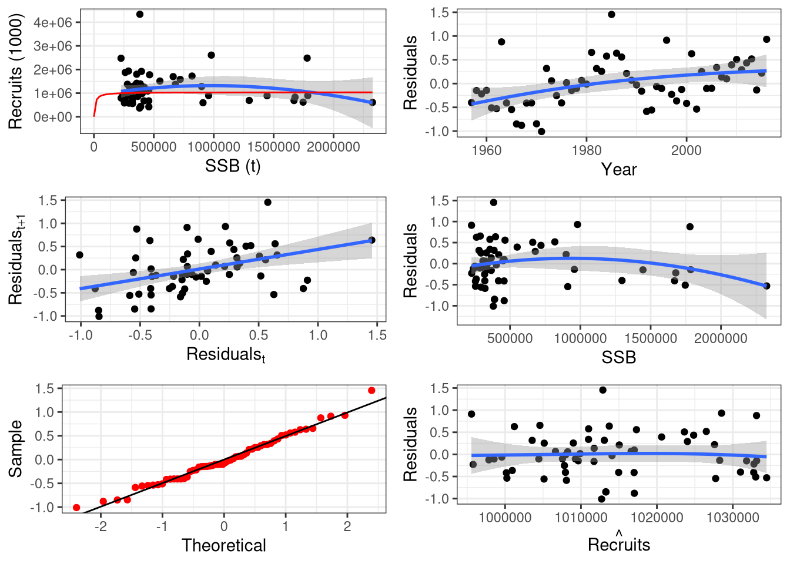

11 Reference Points
One of the primary objectives of stock assessment is the estimation of reference points. These serve as benchmarks for evaluating the outputs of assessment models and determining the status of a fish stock. Reference points are critical for effective fisheries management, supporting decision makers setting future levels of exploitation.
The most common classification of stock status is bidimensional, comparing exploitation levels and biomass sizes against target reference points. This framework allows for the assessment of whether a stock is overfished or experiencing overfishing:
Exploitation Levels: Typically represented by fishing mortality (\(F\)), overfishing occurs when \(F\) exceeds the target reference point.
Biomass Size: Commonly measured by spawning stock biomass (\(SSB\)), stocks are deemed overfished if the \(SSB\) falls below the reference point.
These assessments often utilize tools like the Kobe plot, which visually represents stock status in relation to these metrics (REF).
In addition to target reference points, limit reference points (LRPs) are commonly included in stock assessments. These represent thresholds that should not be crossed, as they signal a high risk of stock collapse or significant uncertainty in population dynamics. Effective management aims to maintain fishing pressure and biomass levels away from these limits to ensure long-term sustainability and reduce the risk of adverse outcomes.
In 1982, the United Nations Convention on the Law of the Sea (UNCLOS, United Nations (1982)), in Article 61, required coastal states to determine and maintain, or restore, populations of harvested species at levels capable of producing the maximum sustainable yield (MSY). MSY is defined as the largest yield (catch) that can be taken from a specific fish stock over an indefinite period without causing stock depletion. Since then MSY and its proxies, such as \(B_{MSY}\) (biomass at MSY) and \(F_{MSY}\) (fishing mortality at MSY), remain widely used. These reference points are related with the stock’s productivity, which results of a complex interaction between recruitment, individual growth and mortality processes.
Recruitment refers to the addition of new individuals to a fish population, specifically those that become vulnerable to fishing. It includes the process of spawning, which depends on the reproductive potential of adults, and the survival of larvae until they enter the fishery - a process largely influenced by environmental conditions. Individual growth determines how long it takes for a fish to gain weight, increase in length, and eventually reach maturity and reproduce. Mortality is typically divided into natural mortality and fishing mortality. Natural mortality includes all causes of death unrelated to fishing, such as predation by other species, and is influenced by both environmental factors and biological interactions. Fishing mortality, on the other hand, is primarily driven by human activity and depends on decisions related to fishing practices, including the effort exerted by the fleet, the selectivity of the gear used, and the availability of fish. For example, the productivity of a stock can differ significantly depending on whether a fleet fishes in an area with many juvenile fish using small-mesh nets, or in an area where juvenile fish are scarce and large-mesh nets are used. These processes are interconnected and influenced by a complex mix of environmental conditions and biological characteristics.
For this section we’ll be using the package FLBRP (Laurence T. Kell and Scott 2025) from the FLR family of packages and its documentation for parts of the text.
library(FLBRP)
library(FLa4a)
data(ple4)
data(ple4.indices)
fit0 <- sca(ple4, ple4.indices)
stk0 <- ple4 + fit0To proceed with the computation of reference points we must start by creating an FLBRP object and afterwards run the fitting process with brp(). The FLBRP class has information on selection pattern, mass at age, and biological parameters (see ?FLBRP for a full description of this class).
Slots named *.obs will contain the related time series present in the original FLStock object, while other slots will contain averages across the year dimension over the last \(n\) years, where \(n\) is controlled by the arguments biol.nyears, fbar.nyears and sel.nyears (Table 11.1)
| Argument | Default value | Description |
|---|---|---|
| fbar | seq(0, 4, length.out = 101) | Vector of Fs to find minimum or maximum value of metric, e.g. MSY |
| nyears | 3 | Number of years to average across to estimate input quantities for reference points estimation |
| biol.nyears | nyears | Number of years to average across to estimate biological quantities, e.g. maturity |
| fbar.nyears | nyears | Number of years to average across to scale F-at-age to 1 and compute selection pattern |
| sel.nyears | nyears | Number of years to average across to compute landings and discards in number of individual per age |
| na.rm | TRUE | Remove NA if existing |
| mean | “arithmetic” | Statistic to average quantities above, alternative is “geometric” for the geometric mean |
By default FLBRP creates a harvest slot with 100 computations of fishing mortality at age scaled from \(\bar{F}=0\) up to \(F_{crash}\) or \(\bar{F}=4\), if the former isn’t possible to compute, which is later used to find the reference points.
11.1 Yield per recruit reference points
In the case where no stock recruitment relationship exists, or was fitted, brp() will return yield per recruit reference points. By default it computes biomasses in the absence of fishing, also know as virgin biomass, \(F_{MAX}\), \(F_{0.1}\) and 40% Spawning per recruit reference points.
## An object of class "FLBRP"
##
## Name:
## Description:
## Quant: age
## Dims: age year unit season area iter
## 10 101 1 1 1 1
##
## Range: min max pgroup minfbar maxfbar
## 1 10 10 2 6
##
##
## Model: rec ~ a
## params
## iter a
## 1 1
##
## refpts: calculatedThe selection pattern and other quantities can be depicted by calling plot() on the specific FLBRP object’s slot.


To extract a table with all reference points one uses the method refpts(). Note in this case \(F_{msy}\) is the same as \(F_{max}\), since the assumed stock recruitment is mean recruitment.
## An object of class "FLPar"
## quant
## refpt harvest yield rec ssb biomass revenue cost
## virgin 0.00e+00 0.00e+00 1.00e+00 3.42e+00 3.53e+00 NA NA
## msy 2.10e-01 7.08e-02 1.00e+00 9.44e-01 1.03e+00 NA NA
## crash 1.47e+01 6.02e-06 1.00e+00 4.38e-06 2.87e-02 NA NA
## f0.1 1.58e-01 6.85e-02 1.00e+00 1.28e+00 1.38e+00 NA NA
## fmax 2.10e-01 7.08e-02 1.00e+00 9.44e-01 1.03e+00 NA NA
## spr.30 1.96e-01 7.06e-02 1.00e+00 1.03e+00 1.12e+00 NA NA
## mey NA NA NA NA NA NA NA
## quant
## refpt profit
## virgin NA
## msy NA
## crash NA
## f0.1 NA
## fmax NA
## spr.30 NA
## mey NA
## units: NA## An object of class "FLPar"
## quant
## refpt harvest yield rec ssb biomass revenue cost profit
## msy 0.2099 0.0708 1.0000 0.9436 1.0349 NA NA NA
## fmax 0.2099 0.0708 1.0000 0.9436 1.0349 NA NA NA
## units: NAThe depiction of the reference points with the method plot() shows recruitment as constant over all levels of biomass and set to \(1\).

11.2 Stock recruitment relationship based reference points
An important way to improve reference points is to include stock recruitment dynamics. Yield per recruit, as in the previous section, ignores these dynamics and assumes recruitment will be the same no matter \(SSB\)’s size. To inform brp() to take stock recruitment dynamics into account, the stock recruitment model must be fitted and the resulting FLSR object passed to the FLBRP call when creating the FLBRP object.
There’s two ways of fitting stock recruitment models: (i) after fitting the stock assessment model by using its outputs, SSB and recruitment, as data to fit the model; (ii) inside the stock assessment model together with all other quantities. There’s pros and cons on both approaches, we’re not going to dwell on those now though.
11.2.1 Stock recruitment after fitting the stock assessment model
In the following example we’ll use a Beverton and Holt stock recruitment relationship. There are several other relationships that can be used, see ?bevholt for more details.

We now need to provide the FLSR object, sr0, to the FLBRP() and refit the reference points.
## rec ~ a * ssb/(b + ssb)
## <environment: 0x5a92a4b6dcd8>## An object of class "FLPar"
## params
## a b
## 1038832 9829
## units: NAThe new reference points can now be extracted using refpts() with the FLBRP object as the main argument, and depict the relationships with plot(). Note this time by setting the flag obs to TRUE the plot will include the estimates of \(SSB\) and \(R\).
## An object of class "FLPar"
## quant
## refpt harvest yield rec ssb biomass revenue cost
## virgin 0.00e+00 0.00e+00 1.04e+06 3.54e+06 3.65e+06 NA NA
## msy 2.07e-01 7.28e+04 1.03e+06 9.87e+05 1.08e+06 NA NA
## crash 2.25e+00 1.11e-06 3.87e-04 3.66e-06 1.83e-05 NA NA
## f0.1 1.58e-01 7.06e+04 1.03e+06 1.32e+06 1.42e+06 NA NA
## fmax 2.10e-01 7.28e+04 1.03e+06 9.70e+05 1.06e+06 NA NA
## spr.30 1.96e-01 7.27e+04 1.03e+06 1.06e+06 1.15e+06 NA NA
## mey NA NA NA NA NA NA NA
## quant
## refpt profit
## virgin NA
## msy NA
## crash NA
## f0.1 NA
## fmax NA
## spr.30 NA
## mey NA
## units: NANote \(MSY\) based reference points are no longer the same as \(F_{MAX}\), and recruitment is no longer constant over all \(SSB\) levels.

11.2.2 Stock recruitment during stock assessment model fit
An alternative option, using sca(), its to fit the stock recruitment model together with the stock assessment model fit, and create the FLSR object from the fit object (Figure 11.1).
# fit with Beverton and Holt model
fit1 <- sca(ple4, ple4.indices, srmodel = ~ bevholt(CV = 0.5))
# create FLSR object
a4aflsr <- as(fit1, "FLSR")
Figure 11.1: Stock recruitment model estimated by sca()
Create the FLBRP object with the new FLSR object with the stock recruitment model fitted with sca() and fit a new set of reference points (Figure 11.2). Note the reference points are slightly different. The stock recruitment parameters estimated with sca() take into account all the other parameters and as such are not exactly the same, ultimately resulting in a distinct set of reference points.

Figure 11.2: Reference points estimated with sca() stock recruitment fit
11.3 Economics reference points
We can add economic data to the FLBRP object to calculate economic based reference points, like maximum economic yield (MEY). We need to provide information about price, variable costs and fixed costs. The first in value at age per weight of fish, the others in value per unit of fishing mortality.
# price
price(brp0) <- c(rep(1,3),rep(1.5,2),rep(2,5))
price(brp0)@units <- "1000 euro per ton"
# variable costs per F
vcost(brp0) <- 100000
vcost(brp0)@units <- "1000 euro per F"
# fixed costs per F
fcost(brp0) <- 50000
fcost(brp0)@units <- "1000 euro per F"
# reference points
brp0 <- brp(brp0)
refpts(brp0)## An object of class "FLPar"
## quant
## refpt harvest yield rec ssb biomass revenue cost
## virgin 0.00e+00 0.00e+00 1.04e+06 3.54e+06 3.65e+06 0.00e+00 5.00e+04
## msy 2.07e-01 7.28e+04 1.03e+06 9.87e+05 1.08e+06 1.21e+05 7.07e+04
## crash 2.25e+00 1.11e-06 3.87e-04 3.66e-06 1.83e-05 1.15e-06 2.75e+05
## f0.1 1.58e-01 7.06e+04 1.03e+06 1.32e+06 1.42e+06 1.20e+05 6.58e+04
## fmax 2.10e-01 7.28e+04 1.03e+06 9.70e+05 1.06e+06 1.21e+05 7.10e+04
## spr.30 1.96e-01 7.27e+04 1.03e+06 1.06e+06 1.15e+06 1.22e+05 6.96e+04
## mey 2.19e-01 7.27e+04 1.03e+06 9.22e+05 1.02e+06 1.21e+05 7.19e+04
## quant
## refpt profit
## virgin -5.00e+04
## msy 5.07e+04
## crash -2.75e+05
## f0.1 5.38e+04
## fmax 5.03e+04
## spr.30 5.21e+04
## mey 4.89e+04
## units: NAThe reference points table is now complete with values for revenue, costs and profit, as well as estimtes for \(MEY\) based reference points. The point where profits are maximized, instead of the point where catch is maximized as in the case of MSY (Figure 11.3).
Figure 11.3: Reference points including economic reference points
11.4 Computing user specific reference points
The user may want to calculate specific “reference points” given F levels. The example below shows how it can be done, having in mind that by specifying F levels the user may be computing arbitrary references.
## An object of class "FLPar"
## quant
## refpt harvest yield rec ssb biomass revenue cost
## virgin 0.00e+00 0.00e+00 1.04e+06 3.54e+06 3.65e+06 0.00e+00 5.00e+04
## msy 2.07e-01 7.28e+04 1.03e+06 9.87e+05 1.08e+06 1.21e+05 7.07e+04
## crash 2.25e+00 1.11e-06 3.87e-04 3.66e-06 1.83e-05 1.15e-06 2.75e+05
## f0.1 1.58e-01 7.06e+04 1.03e+06 1.32e+06 1.42e+06 1.20e+05 6.58e+04
## fmax 2.10e-01 7.28e+04 1.03e+06 9.70e+05 1.06e+06 1.21e+05 7.10e+04
## spr.30 1.96e-01 7.27e+04 1.03e+06 1.06e+06 1.15e+06 1.22e+05 6.96e+04
## mey 2.19e-01 7.27e+04 1.03e+06 9.22e+05 1.02e+06 1.21e+05 7.19e+04
## Ftrgt1 3.30e-01 6.53e+04 1.02e+06 4.95e+05 5.80e+05 1.05e+05 8.30e+04
## Ftrgt2 4.40e-01 5.37e+04 1.00e+06 2.81e+05 3.58e+05 8.27e+04 9.40e+04
## quant
## refpt profit
## virgin -5.00e+04
## msy 5.07e+04
## crash -2.75e+05
## f0.1 5.38e+04
## fmax 5.03e+04
## spr.30 5.21e+04
## mey 4.89e+04
## Ftrgt1 2.16e+04
## Ftrgt2 -1.13e+04
## units: NAOne specific case of user tailored reference points is to compute \(F_{MSY}\) ranges according to Hilborn (2010) and Rindorf et al. (2016) ideas. For this case there’s already the method msyRanges(), which takes as argument a fitted FLBRP object and delivers a FLPar object, similar to refpts with the lower and upper boundary of F according to the specified range multiplier, e.g. if 0.05 the ranges will reflect \((1-0.05) \times F_{MSY}\) and \((1+0.05) \times F_{MSY}\).
## An object of class "FLPar"
## quantity
## refpt harvest yield rec ssb biomass revenue cost profit
## msy 2.07e-01 7.28e+04 1.03e+06 9.87e+05 1.08e+06 1.21e+05 7.07e+04 5.07e+04
## min 1.45e-01 6.92e+04 1.03e+06 1.43e+06 1.53e+06 1.18e+05 6.45e+04 5.31e+04
## max 2.87e-01 6.92e+04 1.02e+06 6.26e+05 7.14e+05 1.12e+05 7.87e+04 3.36e+04
## units: NA